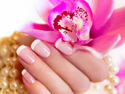
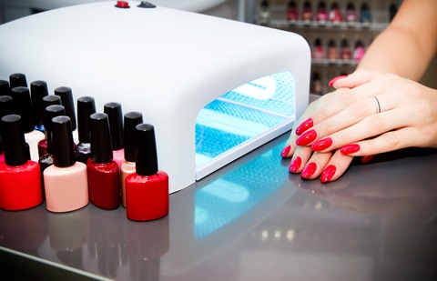
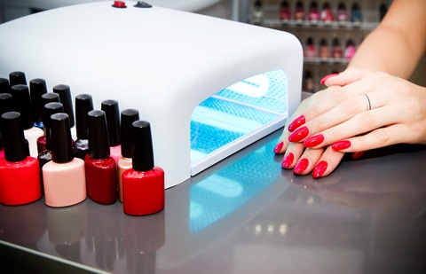

Option of Services
Hair
Keratin Treatment
HairStyles
Haircut
Keratin treatments prove to be an easy way to deal with dull, dry and frizzy hair and make them smooth and shiny.
braids, Fringe, curls, buns
pixie cut, typical Bob, Side Swept Bangs, Stacking Crop, Shag, Blunt Lob


Nails
Traditional manicure
Pedicure
semi-permanent
Acrylic
Press on
PolyGel
Consists of filing and shaping the free edge of nails, pushing and clipping any nonliving tissue, treatments with various liquids, massage of the hand, and the application of fingernail polish.
Cosmetic treatment of the feet and toenails, analogous to a manicure. During a pedicure, dead skin cells are rubbed off the bottom of the feet using a rough stone. Skincare is often provided up to the knee, including granular exfoliation, moisturizing, and massage.
Polish is a photo-hardening gel, a longer-lasting polish, compared to traditional air-drying nail polish. It dries by holding your client's nails for a few seconds under a special ultraviolet lamp.
Are a combination of a liquid monomer and a powder polymer that form a paste which is bonded to the natural nail. It's then given the desired shape, where it hardens in place to add strength, length, and thickness to the nail.
Are artificial acrylic nails that have already been made up ready to stick to the natural nail. Depending on the quality of the nail, they can last up to 2 weeks on the nail. If applied correctly, they can look and feel just like acrylic nails.
Is a hybrid nail polish formula originally created for nail technicians.It offers the best qualities of acrylics and gel nails. Essentially, it's a nail enhancement made with acrylic powder and clear gel that can be used to give you the perfect set
 



Eyebrows and EyeLashes
Hair by hair eyelashes
Lifting
Is a very effective technique for instant lengthening and thickening of the eyelashes. The system works with a wide range of hair textures and sizes, that can be combined for looks that run the gamut subtle and natural to trendy and glamorous.
Is a semi-permanent lift and curl of your natural lashes, much like a perm. By bending your natural lashes over a curved silicone shield and applying a perming solution, a lash technician can set the shape of your natural lashes into an upward and realistic curl.